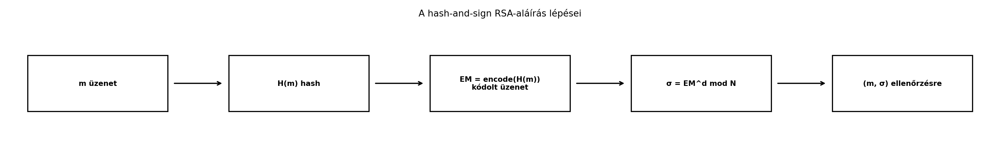
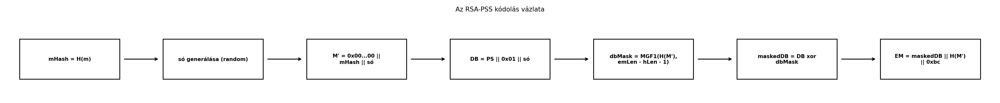

A digitális aláírás az üzenet hitelességének és letagadhatatlanságának alapvető eszköze. Az RSA-aláírás a legrégebbi és ma is leggyakrabban használt nyilvános kulcsú aláírási séma: a TLS-tanúsítványoktól a szoftverfrissítésekig számtalan helyen találkozunk vele. A kézenfekvőnek tűnő „titkos kulccsal hatványozzuk az üzenetet, nyilvános kulccsal ellenőrizzük” megközelítés azonban súlyos hibákat rejt. Ebben az alfejezetben felépítjük a biztonságos RSA-aláírást: megmutatjuk, miért nem elég maga a moduláris hatványozás, bevezetjük a hash-and-sign elvet, megvizsgáljuk a PKCS#1 v1.5 kódolást és annak egy híres, laza ellenőrzésből fakadó támadását, végül eljutunk a bizonyíthatóan biztonságos RSA-PSS konstrukcióhoz.
Az RSA titkosításnál megismert csapda: a nyers, úgynevezett tankönyv-RSA sem titkosításra, sem aláírásra nem biztonságos. Aláírás esetén a kiinduló ötlet a következő: az aláíró a titkos kitevőjével hatványozza az üzenetet, az ellenőrző pedig a nyilvános kitevővel ellenőrzi:
Ez első pillantásra működik, hiszen az RSA permutáció inverzeket ad. Csakhogy ezzel a sémával a támadó gyakorlatilag bármilyen értékhez kérhet aláírást a kulcstulajdonostól, hacsak az aláíró nem gondolja meg, mit ír alá. Még rosszabb: a támadó két érvényes aláírásból egy harmadik üzenethez készíthet aláírást anélkül, hogy a titkos kulcsot ismerné. Ez a multiplikatív tulajdonság: ha és , akkor
tehát érvényes aláírása az üzenetnek. A támadó így egzisztenciális hamisítást tud elkövetni: olyan üzenet-aláírás párt állít elő, amelyet az aláíró soha nem írt alá, de az ellenőrző elfogad. Ez pontosan az EUF-CMA biztonság megsértése.
A gyakorlatban a megoldás kettős: először az üzenetet egy ütközésellenálló hash-függvénnyel tömörítjük, majd a hash értéket aláírjuk; másodszor a hash értéket egy gondosan megtervezett, véletlenített kódolással a modulus teljes hosszára illesztjük. Így jutunk el a hash-and-sign elvhez, illetve az RSA-PSS-hez.
A hash-and-sign alapötlete az, hogy a moduláris hatványozás bemenete nem maga az üzenet, hanem annak egy rögzített hosszúságú lenyomata:

Az ábrán látható, hogy az aláírás nem az üzenetre, hanem a kódolt hash-re épül. Az ellenőrzés során a fogadó visszafejti a -t a nyilvános kitevővel, kap egy EM értéket, szétbontja, és összehasonlítja a kapott hash-t az üzenet hash-ével. A kódolásnak biztosítania kell, hogy a visszafejtett EM egyértelmű szerkezetű legyen, és a támadó ne tudjon érvényes kódolást generálni a titkos kulcs nélkül.
Definíció. (Hash-and-sign RSA-aláírás, vázlat) Legyen RSA-modulus, nyilvános, titkos kitevő, ahol . Legyen ütközésellenálló hash-függvény, és legyen egy determinisztikus vagy véletlenített kódoló függvény, amely az bites hash értéket a modulus hosszának megfelelő, bites EM értékké alakítja . Az aláírás:
Az ellenőrzés: a fogadó kiszámítja , dekódolja, és ellenőrzi, hogy a kapott hash megegyezik-e -mel, valamint hogy a kódolás szerkezete teljesen érvényes.
A hash-and-sign konstrukcióban a hash érték hossza általában 256 bit, míg az RSA modulus 2048 bit, tehát a hash érték közvetlenül nem tölti ki a modulust. Ha a hash kimenetét egyszerűen egész számként értelmezzük és aláírjuk (a „full domain hash” nélkül), az ismét támadható: a támadó ismert hash értékek szorzataként előállíthat egy olyan hash értéket, amelyhez nehéz ugyan üzenetet találni, de az ütközésellenállás önmagában nem zárja ki a multiplikatív szerkezetet. A biztonsági bizonyításhoz olyan -ra van szükség, amelynek kimenete a teljes modulus tartományba esik, azaz . Ennek neve teljes doménű hash (Full Domain Hash, FDH). Az RSA–FDH a véletlen orákulum modellben bizonyíthatóan EUF-CMA biztonságos, feltéve hogy az RSA-függvény egyirányú; a pontos, szoros redukció azonban meghaladja ennek a könyvnek a kereteit, ezért a hangsúlyt a gyakorlati konstrukcióra helyezzük.
A gyakorlatban a hash-and-sign elvet a PKCS#1 v1.5 kódolás valósítja meg. A kódolt üzenet (EM) szerkezete a következő:
EM = 0x00 || 0x01 || 0xFF || 0xFF || ... || 0xFF || 0x00 || DigestInfoahol a DigestInfo az ASN.1 kódolású struktúra, amely
tartalmazza a hash algoritmus azonosítóját (OID) és a hash értéket.
Például SHA-256 esetén a DigestInfo előre rögzített, 19 bájt hosszú
prefixszel (3031300d060960864801650304020105000420)
kezdődik, majd a 32 bájtos SHA-256 hash következik. A FF-bájtok
biztosítják, hogy az EM numerikus értéke a megfelelő tartományba essen,
és legalább 8 FF bájtot kell tartalmazni a specifikáció szerint.
A PKCS#1 v1.5 aláírásra sokáig nem volt biztonsági bizonyítás; egy 2018-as eredmény (Jager–Kakvi–May, ellenőrizendő) a véletlen orákulum modellben már igazolja, de a PSS redukciója régebb óta ismert és szorosabb. A v1.5 kódolást a gyakorlatban mindmáig széles körben használják, elsősorban kompatibilitási okokból; a tényleges kockázat a laza ellenőrzés. A biztonság kulcsa az ellenőrzés szigorúsága: a visszafejtett EM minden egyes bájtját meg kell vizsgálni, és a formátumtól való bármilyen eltérés esetén el kell utasítani az aláírást. Ha az ellenőrző „laza”, azaz például csak azt keresi, hogy a hash érték megtalálható-e a visszafejtett adatban, a rendszer katasztrofálisan megtámadhatóvá válik.
Támadás. (Bleichenbacher e = 3 hamisítás, 2006)
Tegyük fel, hogy az aláíró
nyilvános kitevőt használ, és az ellenőrző implementáció nem ellenőrzi
szigorúan a PKCS#1 v1.5 kódolást. A támadó hamis aláírást szeretne
készíteni egy általa választott
üzenethez. Mivel
,
az aláírás ellenőrzése a
kongruencia. Ha a támadónak sikerül olyan
egész számot találnia, amelyre
pontosan (modulus nélkül) egy érvényes EM szerkezetű
számot ad, akkor a hamisítás sikeres. A laza ellenőrző nem követelte
meg, hogy a DigestInfo és a hash a kódolt blokk VÉGÉN legyen, vagyis a
hash utáni bájtokat nem vizsgálta. A támadó ezért olyan számot választ,
amelynek felső bájtjai 00 01 FF … FF 00 ‖ DigestInfo ‖ H(m)
(az FF-ek száma kevés is lehet), az alsó bájtjai pedig tetszőleges
„szemét”, és veszi ennek egész köbgyökét felfelé kerekítve
().
Mivel a szemét-rész elég hosszú (a szabadon választható bájtok elegendő
szabadságfokot adnak), a
felső bájtjai nem változnak meg a kerekítés miatt, és
miatt moduláris redukció sincs: a laza ellenőrző elfogadja. A támadás a
gyakorlatban azért működött, mert több TLS-könyvtár az RSA-aláírás
ellenőrzésekor a hash utáni bájtokat nem ellenőrizte. A tanulság
egyértelmű: a teljes kitöltést szigorúan, bájtonként ellenőrizni
kell, és az EM hosszának pontosan meg kell egyeznie a modulus
hosszával. A részletes számítási költséget és a konkrét érintett
implementációkat illetően a források ellenőrzésre szorulnak, de a
támadás gyakorlati kivitelezhetőségét a 2006-os bejelentés óta a
szakirodalom megerősítette.
A fogalmak kézzelfoghatóvá tételéhez használjunk kis prímeket: legyen , , így , . Válasszuk nyilvános kitevőt (ez relatív prím 60-hoz), ekkor , mert , tehát .
Aláírás. Legyen az üzenet . A titkos kitevővel:
Számoljuk ki négyzetre emeléssel:
Mivel :
Lépésenként: , majd . Tehát .
Az ellenőrzés: . Számoljuk: , , így
, majd . Visszakaptuk az üzenetet.
Szorzásos hamisítás. Legyen az érvényes aláírása, és legyen az aláírása. Ellenőrizzük, hogy érvényes: ? Négyzetre emeléssel , , , , ; mivel , . Ekkor a támadó az üzenethez előállítja a
aláírást. Ellenőrzés: , így . Az aláírás érvényes, pedig a titkos kulcsot nem használták. Ez a példa pontosan mutatja a textbook RSA végzetes tulajdonságát: a multiplikativitás lehetővé teszi az egzisztenciális hamisítást.
A szorzásos támadás ellen az üzenet hash-elése véd. Ha az aláírás bemenete és nem , akkor a támadó számára egy szorzat érvényes ugyan a hash értékre, de ez a hash érték gyakorlatilag soha nem lesz egyetlen valós üzenet hash-e sem: ehhez ősképet kellene találnia, ami a hash-függvény ősképellenállása miatt kiszámíthatatlanul nehéz. Ez az elv a hash-and-sign: először hash, azután aláírás.
A gyakorlatban a hash kimenete azonban nem tölti ki a teljes modulust. A teljes doménű hash (FDH) ezt úgy oldja meg, hogy a hash függvényt a halmazba képezi le. Az RSA–FDH a véletlen orákulum modellben bizonyíthatóan EUF-CMA biztonságos, ha az RSA-függvény egyirányú. A bizonyítás redukciót ad: ha egy támadó valószínűséggel hamisít, akkor abból egy RSA-invertáló algoritmus építhető, amelynek sikerességi valószínűsége az -tól függ, legfeljebb a véletlen orákulum hívások számával arányos veszteséggel. A teljes bizonyítás meghaladja a könyv szintjét, ezért itt csak a konstrukció elvét rögzítjük.
A PSS (Probabilistic Signature Scheme) egy Bellare és Rogaway által tervezett, véletlenített kódolási séma, amelyet a PKCS#1 v2.1 szabvány részeként adoptáltak. A PSS a hash-and-sign elvet valósítja meg, de a hash érték mellé egy véletlen sót (salt) is kever, így ugyanazon üzenethez több különböző érvényes aláírás tartozhat. A só használata megszünteti a determinisztikus szerkezet esetleges támadási felületeit, és lehetővé teszi a szoros redukciót az RSA egyirányúságára.
A PSS kódolás lépései:

A kódolás után az aláírás:
Az ellenőrzés során a fogadó visszafejti a
-t:
,
felbontja a maszkolt részt, visszaállítja a DB-t, ellenőrzi, hogy a PS
nulla bájtokból áll, a 0x01 elválasztó megfelelő pozícióban
van, és a só után visszaszámolja a hashelt értéket. Az ellenőrzés
minden bájtot érvényesít; bármilyen eltérés
elutasításhoz vezet.
A PSS biztonsági érve a véletlen orákulum modellben működik: ha a hash-függvényt és a maszkgeneráló függvényt ideális véletlen orákulumnak tekintjük, és az RSA-függvényt egyirányúnak feltételezzük, akkor a PSS EUF-CMA biztonságos. A bizonyítás redukciót konstruál: egy PSS-hamisító sikeres támadásából az RSA-invertáló algoritmus valószínűségi sikerét lehet levezetni, az előnyveszteség pedig a só hosszától és a hash-függvény kimenetétől függ. A PSS előnye a PKCS#1 v1.5-tel szemben, hogy a bizonyítható biztonság keretében igazolható, míg a v1.5 kódolásra csak később született (kevésbé szoros) bizonyítás, és a gyakorlatban a szigorú ellenőrzés mellett megbízhatónak bizonyult.
cryptography csomaggalA következő kód az iparági gyakorlatnak megfelelően a
cryptography csomag magas szintű API-ját használja. A
kulcsgenerálás itt demonstrációs céllal történik; éles környezetben
kulcskezelésre is szükség van (lásd a Kulcskezelés:
HSM, KMS, rotáció és életciklus alfejezetet).
from cryptography.hazmat.primitives import hashes
from cryptography.hazmat.primitives.asymmetric import rsa, padding
# Éles API (cryptography csomag); a kulcskezelésről éles környezetben külön
# gondoskodni kell, a kulcsot itt csak demonstrációs céllal generáljuk helyben.
private_key = rsa.generate_private_key(
public_exponent=65537,
key_size=2048,
)
message = b"Pelda uzenet alairasra"
# Aláírás RSA-PSS-sel, SHA-256 hash és maximális sóhossz használatával.
signature = private_key.sign(
message,
padding.PSS(
mgf=padding.MGF1(hashes.SHA256()),
salt_length=padding.PSS.MAX_LENGTH,
),
hashes.SHA256(),
)
# Ellenőrzés a nyilvános kulccsal.
public_key = private_key.public_key()
try:
public_key.verify(
signature,
message,
padding.PSS(
mgf=padding.MGF1(hashes.SHA256()),
salt_length=padding.PSS.MAX_LENGTH,
),
hashes.SHA256(),
)
print("Az aláírás érvényes.")
except Exception:
print("Az aláírás nem érvényes!")Várt kimenet:
Az aláírás érvényes.A kód bemutatja a PSS-hez tartozó két paraméter, a maszkgeneráló
függvény (MGF1) és a só hosszának megadását. Az aláírás
ellenőrzése során a könyvtár automatikusan elutasítja a hibás kódolást,
ezért nem kell kézzel validálnunk a bájtokat.
A TLS-tanúsítványokat a hitelesítésszolgáltatók (CA-k) digitálisan
aláírják, és ehhez a leggyakrabban RSA-aláírást használnak. A
tanúsítványban szereplő signatureAlgorithm mező határozza
meg a pontos sémát, például sha256WithRSAEncryption a
PKCS#1 v1.5 kódolást jelöli, míg rsassaPss az RSA-PSS-t. A
PKCS#1 v1.5 továbbra is széles körben elterjedt, mert a régi kliensek és
eszközök csak ezt támogatják; azonban a modern ajánlások az RSA-PSS
használatát részesítik előnyben, mert az bizonyíthatóan biztonságos, és
a szigorú ellenőrzés mellett kevésbé érzékeny az implementációs
hibákra.
A 2006-os Bleichenbacher-támadás rávilágított arra, hogy a PKCS#1 v1.5 ellenőrzésének bármilyen lazasága a teljes PKI-t veszélyeztetheti: ha egy CA-tanúsítványt sikerül hamisítani, a támadó tetszőleges domainhez állíthat ki érvényesnek tűnő tanúsítványt. A mai könyvtárak ezért a visszafejtett EM minden bájtját szigorúan ellenőrzik, és a konfigurációban is támogatják a PSS-t. A gyakorlati szabály: tanúsítványoknál RSA-aláírás esetén használjunk PSS-t, ha minden fél támogatja; ha maradnunk kell a v1.5-nél, akkor is gondoskodjunk a szigorú, teljes bájtsorozatot érvényesítő ellenőrzésről. A PSS sémát a későbbi fejezetekben a tanúsítványoknál (Tanúsítványok és az X.509) és a fájltitkosító záróprojektben (1. projekt: fájltitkosító eszköz AEAD-dal és jelszóból származtatott kulccsal) is használjuk.
Továbbvitt eredmény. Az RSA-PSS konstrukciót és annak szigorú ellenőrzési követelményét használjuk a Tanúsítványok és az X.509 alfejezetben, ahol a tanúsítvány-aláírások formátumát és a PKI-t tárgyaljuk; a Protokollszintű hibák: visszaminősítés, bemenetellenőrzés, kontextuskötés alfejezetben pedig a szigorú ellenőrzés hiányából fakadó protokollhibákat vizsgáljuk meg részletesen. A 1. projekt: fájltitkosító eszköz AEAD-dal és jelszóból származtatott kulccsal projektben az aláírás-ellenőrzés gyakorlati felhasználása is megjelenik.
1. feladat (A). Legyen , , , , . Számítsuk ki a titkos kitevőt, ha , majd írjuk alá a üzenetet textbook RSA-val, és ellenőrizzük az aláírást.
2. feladat (A). A fenti példában legyen a aláírása és a aláírása. Adjuk meg a üzenethez tartozó, szorzásos hamisítással előállított aláírást, és ellenőrizzük.
3. feladat (B). Tervezzünk egyszerű kódolási sémát hash-and-sign aláíráshoz: az üzenet SHA-256 hash-ét (32 bájt) kiegészítjük egy fix 4 bájtos prefixszel, majd nulla bájtokkal jobbról, hogy a teljes hossz 128 bájt legyen. Magyarázzuk el, miért nem biztonságos ez a séma a PKCS#1 v1.5-höz képest, és milyen támadásnak van kitéve.
4. feladat (B). Értelmezzük a PSS kódolás lépéseit: miért szükséges a só, és miért kell a DB részt MGF1-gyel maszkolni?
5. feladat (C). Bizonyítsuk be formálisan, hogy a textbook RSA-aláírás multiplikatív: ha és , akkor érvényes aláírás az üzenetre.
6. feladat (D). Elemezzük a következő Python-kódot, amely egy laza PKCS#1 v1.5 ellenőrzést valósít meg (csak a hash-t keresi). Mondjuk meg, miért sebezhető ez a Bleichenbacher e = 3 támadással szemben, és javítsuk úgy, hogy szigorú legyen. (A kód oktatási célú, nem éles használatra.)
def loose_verify(signature: int, message_hash: bytes, e: int, n: int) -> bool:
# Visszafejtés: em = signature^e mod n
em = pow(signature, e, n)
# Bájtkonverzió nagy endian, hossz n bájtban
em_bytes = em.to_bytes((n.bit_length() + 7) // 8, "big")
# Laza keresés: a hash a végén van?
return em_bytes.endswith(message_hash)00 01, legalább 8 FF,
00, a teljes DigestInfo és hash, és semmi utána; az EM
hossza megegyezik a modulus hosszával.0xbc-vel végződik; a v1.5
determinisztikus, FF-kitöltéssel és DigestInfo-val.1. feladat (A) megoldása. : , tehát . Aláírás: . Négyzetre emelések: , , , . Mivel : , , . Tehát . Ellenőrzés: , , . Helyes.
2. feladat (A) megoldása. aláírása . aláírása : , , , ; miatt , , . Tehát . Ellenőrzés: , , . A szorzásos hamisítás: , . Ellenőrzés: , , . Helyes.
3. feladat (B) megoldása. A leírt séma:
prefix || hash || 0...0. Ez nem biztonságos, mert a
felhasznált kitöltő bájtok nem ellenőrzöttek. Ha az ellenőrző csak a
hash utolsó 32 bájtját nézi, a támadó a prefix és a hash közé
tetszőleges bájtokat szúrhat be, és az
esetben a köbgyök-trükkel hamis aláírást készíthet, ahogyan a
Bleichenbacher-támadásnál. A PKCS#1 v1.5 azért erősebb, mert a kitöltő
bájtok értékét és számát is szigorúan előírja, így az ellenőrzés
egyértelmű szerkezetet vár.
4. feladat (B) megoldása. A só véletlenít, így ugyanazon üzenet aláírása sem determinisztikus, ami csökkenti a támadó által kihasználható szerkezeti információt. A DB (amely a sót és az elválasztót tartalmazza) maszkolása MGF1-gyel (egy maszkgeneráló függvény, amely a hash-ből bővíti a kimenetet) elrejti a sót az EM-ben, és a véletlen orákulum modellben a bizonyítás szempontjából kulcsfontosságú, mert a támadó nem tudja a DB-t az aláírás nélkül rekonstruálni.
5. feladat (C) megoldása. Definíció szerint és . Ekkor
mert a moduláris hatványozás és szorzás felcserélhető: . Mivel , a érvényes aláírása -nek: , feltéve, hogy (vagy legalább a kongruencia teljesül). Ez a szorzásos hamisítás.
6. feladat (D) megoldása. A
loose_verify csak a hash utolsó bájtjait ellenőrzi, így a
támadó az EM elejét tetszőlegesen módosíthatja.
esetén a támadó választhat egy
értéket, amelynek köbe éppen egy olyan EM-et ad, amely a várt hash-szel
végződik, a többit pedig kedve szerint állítja be; ezt a fent leírt
köbgyök-kereséssel megteheti. (Az endswith-ellenőrzés a
Bleichenbacher-támadástól eltérő hiba: itt elég egy
,
amelyre
;
páratlan
-ra
ilyen mindig létezik.) A javítás: a visszafejtett EM hosszát pontosan a
modulus bájtjaira kell méretezni, és elemezni kell az összes bájtot: az
első bájt 0x00, a második 0x01, legalább 8
0xFF, egy 0x00 elválasztó, majd a DigestInfo,
és semmi több. Egy szigorú ellenőrző kód vázlata:
def strict_verify(signature: int, message_hash: bytes, e: int, n: int) -> bool:
k = (n.bit_length() + 7) // 8
em = pow(signature, e, n).to_bytes(k, "big")
# DigestInfo SHA-256-hoz: 3031300d060960864801650304020105000420 || hash
expected = bytes.fromhex("3031300d060960864801650304020105000420") + message_hash
return em == b"\x00\x01" + b"\xff" * (k - len(expected) - 3) + b"\x00" + expectedEz a kód csak oktatási célú, valós környezetben a
cryptography könyvtár magas szintű ellenőrzését kell
használni.
A textbook RSA-aláírás
()
multiplikatív, ezért EUF-CMA szempontjából teljesen használhatatlan: két
ismert aláírásból egy harmadik üzenetre készíthető érvényes aláírás. A
hash-and-sign elv az üzenet hash-ét írja alá, így a
szorzásos támadás hatástalanná válik, mert a hash-ek szorzatához
gyakorlatilag lehetetlen üzenetet találni. A PKCS#1
v1.5 kódolás a hash elé fix prefixet és FF-kitöltést helyez;
biztonsága a teljes EM szigorú, bájtonkénti ellenőrzésén múlik. A
2006-os Bleichenbacher e = 3 támadás azt mutatta, hogy
a laza ellenőrzés az RSA-aláírás hamisításához vezethet. Az
RSA-PSS véletlen sót és maszkolást használ, és a
véletlen orákulum modellben bizonyíthatóan EUF-CMA biztonságos, ha az
RSA-függvény egyirányú. A gyakorlatban a cryptography
csomag PSS-implementációja a javasolt aláírási mód; PKCS#1 v1.5 esetén a
szigorú ellenőrzés kötelező. Továbbvitt eredmény: az
RSA-PSS-t használjuk a tanúsítványoknál (Tanúsítványok és az X.509) és a záróprojektben (1. projekt: fájltitkosító eszköz AEAD-dal és jelszóból
származtatott kulccsal), a szigorú ellenőrzés hiánya pedig a Protokollszintű hibák: visszaminősítés,
bemenetellenőrzés, kontextuskötés alfejezetben kap kiemelt
figyelmet.
A PKCS#1 v1.5 és RSA-PSS konstrukciók a PKCS#1 v2.1/v2.2 szabványban
(RFC 8017) definiáltak, a FIPS 186-5 az RSA-aláírások szabványos
paramétereit rögzíti. A Bleichenbacher e = 3 támadás 2006-os
publikációjának részleteit a vonatkozó konferenciaanyag tartalmazza; a
konkrét érintett implementációk és a támadás pontos műveletigénye a
forrásokban ellenőrizendő. A Python cryptography csomag
API-jának pontos hívásai az aktuális dokumentációból ellenőrizhetők.